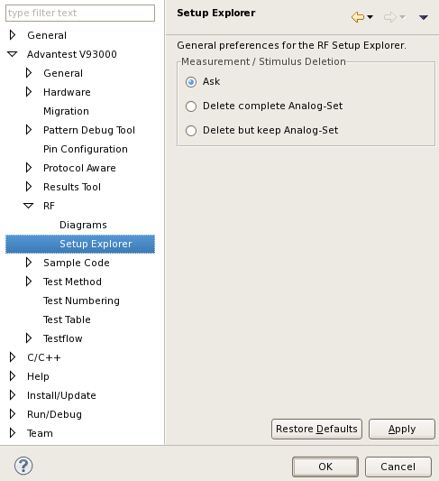

Setup Explorer preference page
You can change the following preferences on the preference page.
Option |
Description |
|---|---|
Measurement / Stimulus Deletion |
When you delete a RF definition from the RF setup tool, this option allows you to select:
|
The following displays the Setup Explorer preference page.

Functional changes
- Introduced before SmarTest 6.3.2